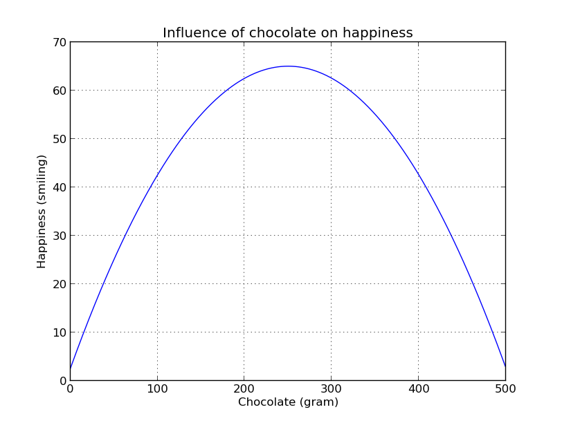
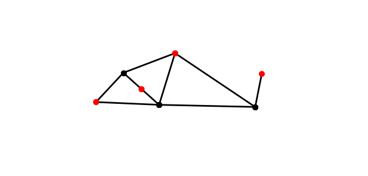
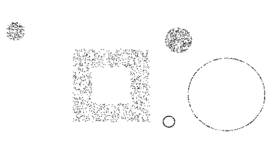
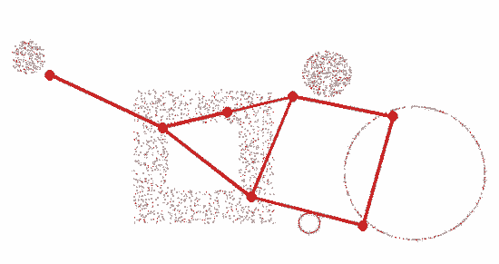
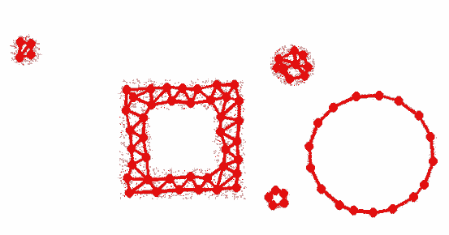

<!doctype html>
<html lang="en">

<head>
	<meta charset="utf-8">

	<title>Python in Science</title>

	<meta name="description" content="Slides for the talk on Python in science for PyLadies Berlin">
	<meta name="author" content="Ivana Kajic">

	<meta name="apple-mobile-web-app-capable" content="yes" />
	<meta name="apple-mobile-web-app-status-bar-style" content="black-translucent" />

	<meta name="viewport" content="width=device-width, initial-scale=1.0, maximum-scale=1.0, user-scalable=no">

	<link rel="stylesheet" href="css/reveal.css" type="text/css" media="screen" />
	<link rel="stylesheet" href="css/night.css" id="theme" />

	<!-- For syntax highlighting -->
	<link rel="stylesheet" href="lib/css/zenburn.css">

	<!-- If the query includes 'print-pdf', use the PDF print sheet -->
	<script>
		document.write( '<link rel="stylesheet" href="css/print/' + ( window.location.search.match( /print-pdf/gi ) ? 'pdf' : 'paper' ) + '.css" type="text/css" media="print">' );
	</script>

	<!--[if lt IE 9]>
	<script src="lib/js/html5shiv.js"></script>
	<![endif]-->
</head>

<body>

	<div class="reveal">

		<div class="slides">

<section data-markdown data-separator="^\n---\n$">
<script type="text/template">

# Python in Science 
### Or how can Python help us understand the human brain? 

PyLadies Berlin, November 2013

<small> [Ivana Kajic](mailto:ivana.kajic@gmail.com) | [@kajic_ivana](http://twitter.com/kajic_ivana) </small>

---

## Why do scientists need to code?                

* Collect, store and process data
* Simulations
* Extract patterns and make predictions using data 

---


## Why do scientists love Python?                  
Because

---

## SciPy is where everything starts...


* Python-based open-source software for mathematics, science, and engineering

* Actively maintained and supported by a huge community

* Some of the included packages: NumPy, Matplotlib, IPython, Pandas...

* These packages are also available idividually, let's take a look at some of them


---

## NumPy                

* Is a powerful package for efficient manipulation of numerical data such as vectors and matrices

* Sytnax is very similar to MATLAB's ([cheat sheet](http://wiki.scipy.org/NumPy_for_Matlab_Users))

* Is a foundation stone for many other Python libraries 

---


    
* Python plotting library

* Generate plots, histograms, power spectra, bar charts, errorcharts, scatterplots, etc, with "just a few lines of code"

* Let's take a look at some examples..

---

### bla bla!

 


```python
import matplotlib.pylab as pl
import numpy as np

t = np.arange(0.0, 2.0, 0.01)
s = np.sin(2*pi*t)
pl.plot(t, s)

pl.xlabel('time (s)')
pl.ylabel('voltage (mV)')
pl.title('About as simple as it gets, folks')
pl.grid(True)
pl.savefig("test.png")
pl.show()
```       

---


### Example plots with matplotlib I


---

### Example plots with matplotlib II


* These examples are taken from [official matplotlib page](http://matplotlib.org/gallery.html#) where you can find even more nice examples and the source code used to generate them

---

## NLTK

* [Natural language toolkit](http://nltk.org/) suitable for linguists, engineers, students, educators, researchers, and industry users alike 
* Suite of text processing libraries for classification, tokenization, stemming, tagging and parsing
* Example application: processing Tweets, RSS Feeds, extracting text from PDF, Word...                   

---

## NLTK Book

* Fundamentals of writing Python programs, working with corpora, categorizing text, analyzing linguistic structure...
* Available [online for free](http://nltk.org/book/):                   


---

## Peek into NLTK

```python
>>> import nltk
>>> sentence = """At eight o'clock on Thursday morning
... Arthur didn't feel very good."""
>>> tokens = nltk.word_tokenize(sentence)
>>> tokens
['At', 'eight', "o'clock", 'on', 'Thursday', 'morning',
'Arthur', 'did', "n't", 'feel', 'very', 'good', '.']
>>> tagged = nltk.pos_tag(tokens)
>>> tagged[0:6]
[('At', 'IN'), ('eight', 'CD'), ("o'clock", 'JJ'), ('on', 'IN'),
('Thursday', 'NNP'), ('morning', 'NN')]
```

---

## 

* [Scikit-learn](http://scikit-learn.org/stable/index.html): satisifes all the data mining and data analysis needs 

* Abundance of algorithms for supervised and unsupervised learning 

* Classification, regression, clustering, model selection, dimensionality reduction and data preprocessing

---

<section class="image-slide" data-background="img/scikit_classifiers_.png">

---


## 

* [Modular toolkit for data processing](http://mdp-toolkit.sourceforge.net/)

* Set of algorithms for data mining, classification, signal processing, pattern recognition...

* In MDP every algorithm is refered to as a node which can be modified by a user

* Built on Numpy and Scipy

---

## MDP: Detection of objects

* Imagine having 2D geometrical objects such as filled or emtpy circles and rectangles which are made of random points, for example:
<center>  </center>

* Our goal is to find out **the number** of objects in this image


---

## MDP: Detection of objects

* There are many ways to solve this problem, but we love neurons and will use a special type of a neural network called [growing neural gas (GNG)](http://en.wikipedia.org/wiki/Neural_gas) to solve it

* GNG spreads a sheet of neurons over the data and tries to position neurons so they maximally cover clusters of data

* At every time step, the number of neurons in network increase until some final condition is met

---

### Neural network in the beginning...


<center>  </center>

---

### ... and after the learning!


<center> </center>


---

### MDP code that does what we have just seen::

```python
import mdp

x = generate_random_circles_and_rectangles()

gng = mdp.nodes.GrowingNeuralGasNode(max_nodes=75)

STEP = 500
for i in range(0, x.shape[0], STEP):
    gng.train(x[i:i+STEP])
gng.stop_training()

n_obj = len(gng.graph.connected_components())
print n_obj
```

```
Output: 5
```
<ul><small> \* Complete source code is available [here](http://mdp-toolkit.sourceforge.net/code/examples/gng/gng.html) </small></ul>


</script>            
</section>                                       

   		</div>

	</div>

	<script src="lib/js/head.min.js"></script>
	<script src="js/reveal.min.js"></script>

	<script>

		// Full list of configuration options available here:
		// https://github.com/hakimel/reveal.js#configuration
		Reveal.initialize({
			controls: true,
			progress: true,
			history: true,
			center: true,
			margin: 0.0,

			theme: Reveal.getQueryHash().theme, // available themes are in /css/theme
			transition: Reveal.getQueryHash().transition || 'default', // default/cube/page/concave/zoom/linear/fade/none

			// Optional libraries used to extend on reveal.js
			dependencies: [
				{ src: 'lib/js/classList.js', condition: function() { return !document.body.classList; } },
				{ src: 'plugin/markdown/marked.js', condition: function() { return !!document.querySelector( '[data-markdown]' ); } },
				{ src: 'plugin/markdown/markdown.js', condition: function() { return !!document.querySelector( '[data-markdown]' ); } },
				{ src: 'plugin/highlight/highlight.js', async: true, callback: function() { hljs.initHighlightingOnLoad(); } },
				//{ src: 'plugin/zoom-js/zoom.js', async: true, condition: function() { return !!document.body.classList; } },
				{ src: 'plugin/notes/notes.js', async: true, condition: function() { return !!document.body.classList; } }
			]
		});

	</script>

</body>
</html>
